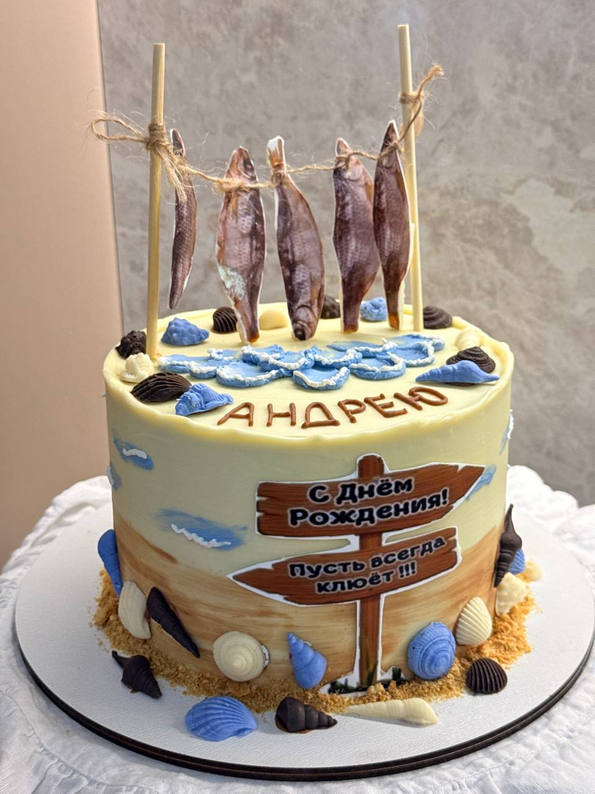

Повод
11 сентября — день рождения Голендухина Андрея Владимировича, генерального директора ИПК «Лазурь». Ему коллеги и адресовали подарок собственного изготовления.

Голендухин Андрей Владимирович
Генеральный директор ИПК «Лазурь»
У самого Андрея Владимировича, кстати, есть тёплая метафора: он сравнивает «Лазурь» с кораблём, который «величаво плывёт в житейском море» — полностью его слова можно прочитать на странице «Наши сотрудники». Так что морская тема в подарке — не случайность.
А судя по оформлению торта — с вялеными рыбками на палочках и подписью «Пусть всегда клюёт!!!» — рыбалка для именинника тоже далеко не пустой звук.

Торт ко дню рождения — с намёком, который поймут все в коллективе